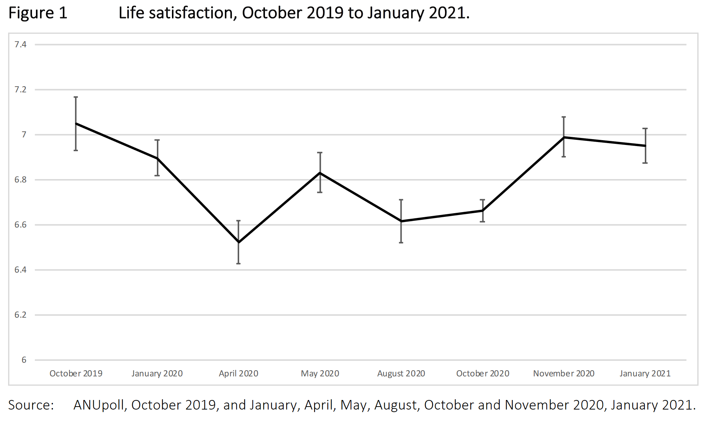

Compared to the trends on January 2020, has Australia or Sweden lost more wellbeing in 2020? And which has seen the greater damage to expected future wellbeing years for after 2020? The Table below summarizes the answers to this.
For the first calculation, let us only count the main elements going into the wellbeing of these two countries in 2020: the experienced wellbeing of the population in 2020 and the excess deaths in 2020. Lots of the other things we normally look at in these covid-calculations, such as changes to GDP, will show up in the anticipated effects for after 2020.
| Lost Wellbeing years in Sweden and Australia due to covid and lockdowns | ||||||
| in 2020 | beyond 2020 | |||||
| Australia | Sweden | Australia | Sweden | |||
| Lockdown Misery | 510000 | 62400 | ? | ? | ||
| Excess deaths | -56 | 3000 | -280 | 15000 | ||
| Future debt repayment | 7773333 | 886340 | ||||
| Loss per million | 20077 | 6288 | 306026 | 86667 | ||
| Ratio | 3 | 3.5 | ||||
First, what was the wellbeing drop in Australia? Well, an ANU-sponsored longitudinal panel found a drop from 6.9 to 6.5 in their life-satisfaction poll from January to April, a huge decline that is similar to the drop in the UK. This panel is based on over 3,000 individuals, which is why this drop is strongly statistically significant.

What about the rest of 2020 in Australia though? The same ANU team, headed by Professor Biddle said at the end of 2020 about the lockdowns in Australia that they were “a massive hit to happiness, experienced by Australians from all walks of life”. They document the increased inequality and how things are particularly bad among the young and the vulnerable in general. Their key graph for the whole of 2020 is above.
This graph aggregates the changes in Australia in the various states, though the ANU team found one can clearly see that life satisfaction plummets in every state during a lockdown but recovers very quickly afterwards, so the top graph is essentially directly related to the average severity of lockdowns in Australia. Now, in terms of actual numbers, we should note that relative to December 2019-Jan 2020, (6.95 on average), Australia from March onwards had an average of around 6.8: the country was right back at the end of 2020 when there almost no lockdowns anywhere, but experiencing various degrees of suffering at other periods.
Now, how bad is an average loss of 0.15 for 9 months, ie a loss of 0.1 for the whole of 2020? A loss of 0.1 means a loss for the 25.4 million Australians of 2.54 million units of wellbeing (called WELLBYs). Since a wellbeing level of 2 is when individuals are, roughly speaking, indifferent between continued living or not, and a regular wellbeing year is spent at level 7, a regular year of life in Australia is worth 5 units of wellbeing. So the 2.54 million lost units are equivalent to 510,000 lost years of wellbeing in Australia in 2020.
In that 510,000 wellbeing years is all the misery caused by lockdowns and social distancing: all the cancelled weddings, all the additional cases of depression, all the extra anxiety, all the worry about unemployment, all the loneliness, all the abused women who could not escape, all the people who were not helped at hospitals, all the people whose IVF treatments were cancelled, etc. These numbers are also born out by other Australian surveys, such as on the strongly worsened mental health situation of Australia’s youth due to barred access to school, evidenced in official reports. The fact that the media does not talk about these lockdowns-victims much doesn’t mean this suffering does not exist.
One can note, btw, that the data just released by the World Happiness Report 2021 fits in perfectly with this picture in that the drop reported there for Australia since 2019 of about 0.1 refers to data gathered in February to mid-March 2020, so largely before the drop but just nipping its first beginnings, hence the drop you expect you see for that period.
And wellbeing in Sweden? Unfortunately for Sweden, there is no neat large panel gathered during the whole year like there is for Australia to base the numbers on, but we do have some comparable data. What we know for Sweden is that, unlike in strong lockdown-countries like the UK or Victoria in Australia, there was no drop in the main wellbeing indicator (life-satisfaction) in the first weeks of the panic in Sweden: Kivi et al. (2020) found among the group one expects to see a drop (the 65-75 year olds) no change in their life satisfaction in early April relative to the previous year, just as, by the way, found in places like the Netherlands which in that period had very light lockdowns.
For the rest of the year, the data for Sweden is patchy. An imperial college panel covering the period after the initial lockdowns(so not the early change) found no significant drop in life satisfaction over time in Sweden for the rest of 2020, but that is essentially because that panel is extremely small (50-100 observations per two-week period). Yet, if we aggregate that data over three month periods, we see that there was a drop in the last 6 months of 2020 relative to the April-June period of 2020. Not a significant drop, but the drop was concentrated in the last 3 months which was when the Swedish government was over-riding its health authority with more restrictions, so exactly the period you do expect to see a drop. So on the balance of probabilities, Sweden probably did have a slight drop in 2020, concentrated in the last 3 months, amounting to a drop over the whole year of 0.03 (this is very close btw, to the insignificant small drop found for the 2020 Gallup data for Sweden underlying the World Happiness Report).
Does this make sense if you look at the policies?. Sweden did not close the schools, which is the thing that has been found to cause massive wellbeing losses among the young and their parents in other countries. Sweden also did not prevent the generations from mixing or friends and workers socialising, which are the big elements in the drop elsewhere. So the lack of a big drop fits with what we know does the damage to wellbeing in strong lockdown places. But the government in Sweden did become more difficult about travel and socialising at the end of 2020. If we go with the data we have available then one should say wellbeing remained constant in Sweden for most of 2020 but probably did drop in the last few months.
Then the excess deaths in Australia and Sweden. The notion of excess deaths depends on what one counts as expected deaths, which is not so easy to say and on which reasonable people can disagree. Yet, the simplest thing to do is to just look at how many deaths there were in 2020 more than the average of 2015-2019. The Oxford group looking into this found that, at the time of recording, there were 112 less deaths in Australia in 2020. In comparison, in Sweden there were 5983 more deaths in 2020. So here we see the benefits of Australia having avoided a large glut of covid deaths, and perhaps also less traffic deaths, less flu deaths, and other sources of death. Sweden too will probably have avoided some traffic deaths and of course many who died of covid would have died in 2020 anyway, reducing the Swedish measured excess deaths to well below their reported number of covid-deaths.
On the other hand, the breakdown in the functioning of much of the health system in Australia during local lockdowns will have meant more cancer deaths and deaths from other preventable health problems. The balance seems to be 112 less deaths in total. Note that these numbers are relatively small. The 6000 extra deaths in Sweden in 2020 means a loss of around 3000 wellbeing years in 2020 (because people on average died in the middle of the year and thus lost 6 months in 2020), whilst the 112 less deaths in Australia meant a gain of 56 wellbeing years.
So Australia in 2020 lost 510,000 wellbeing years, but did gain 56 wellbeing years at the same time because of those 112 less excess deaths. Sweden lost 3000 wellbeing years because of their excess 6000 deaths and 62,400 lost wellbeing years from the probable drop at the end of 2020. This comes with a very simple conclusion: 2020 was a relatively horrible year for Australia. Per one million citizens, Australians lost 3 times more wellbeing than Sweden. The fact that the media chooses to focus on the minuscule gains and not the enormous losses is essentially a form of dismissal of the misery of those who have lost. As if they don't exist.
So Australia compared to Sweden has had a terrible 2020. But, you might wonder, how about losses yet to come after 2020 because of the things that happened in 2020. How about the lost years of life of those who died in 2020? And how about government debt, employment, and all that?
Well, the key statistic there is that Sweden has already absorbed the small peak of unemployment mid-2020 and has ended the year with 3% less GDP at the end of 2019, expected to rebound fully by the end of 2021. The extra government debt in 2020 was 6% of GDP, but the country had stopped running a deficit by the end of 2020. Now, that extra debt really matters because it means reductions in future government expenditure in order to pay back this debt. Equivalently, you might say that money could have been spent in 2020 to fund things that would have increased future wellbeing, such as via setting up mental health programs or improving the health service. As a rule of thumb, based on the finding that governments buy a wellbeing year for around 30,000 Euro (5 WELLBY which are generated by 6000 euro of government spending on average), 1% GDP debt in Sweden (which has 10 million inhabitants) costs Sweden 0.15 million wellbeing years in terms of the effect of those lower future government expenditure, so the extra debt will cost Sweden 886,340 wellbeing years.
How is Australia looking in this regard? Well, the surging iron ore prices have helped keep the 2020 GDP drop to around the same 3% in Australia in 2020, though it has to be said that the expected growth for 2020 was higher than in Sweden, so the drop is relatively bigger. The more relevant difference is the increase in debt: already 10% of GDP has been added to government debt in 2020, but unlike in Sweden, that debt is still climbing fast because of the closed borders and the extremely costly recurrent lockdowns. So the RBA expects the debt to climb at least another 10%. Paying back that debt will involve huge future wellbeing costs, as we are already starting to see with the announced cut-backs.
Per person, Australia and Sweden have essentially the same GDP. So the 10% additional debt in Australia of 2020 will cost Australia 3.9 million wellbeing years. The projected further debt of another 10% will cost another 3.9 million wellbeing years. That is 7.88 million lost wellbeing years in Australia in total.
The 6,000 extra deaths in Sweden of 2020 will going forward mean around 2.5 years of lost life each after 2020, meaning 15,000 lost wellbeing years in the future from those higher excess deaths. By the same token the 112 less excess deaths in Australia mean 288 gained wellbeing years to come.
Summarising just these basic effects, per 1 million inhabitants, in 2020 Sweden lost 6288 wellbeing years, made up of their higher excess deaths and a probable drop at the end of 2020. Australia lost 20,077 wellbeing years per million citizens in 2020, due to the misery of its much harsher intermittent lockdowns. Australians thus experienced a wellbeing drop of 3 times the Swedish wellbeing drop in 2020.
In terms of losses going forward, Sweden’s additional debt and higher excess deaths mean a loss of about 89 thousand wellbeing years per million Swedes. In contrast, the much higher and continuing government debt in Australia means a loss of about 306 thousand wellbeing years per million Australians. Australians thus should expect to lose 3.5 times as much wellbeing going forward as the average Swede.
I can mention that if I add disrupted IVF services, loss of child education, sectoral disruption, and loss of basic freedoms into this calculation, that Australia’s losses loom much worse still than Sweden since all these were much worse affected in Australia than Sweden. So you should see the calculations above as rigged to look good for Australia. I intend to do another post with an extended comparison when some of the key data on other effects, like the covid baby bust and the extent of unemployment in Australia, have become clear.
The conclusion is inescapable: in terms of the wellbeing of the population, which counts everything that makes life worthwhile, 2020 was a much worse year for Australia than Sweden, with the events of 2020 also blighting the future much more for Australia than for Sweden. The fact that much of its media and commentariat do not seem to realise this, tells you how abandoned the many victims of lockdown policies in Australia must feel.
[This post was updated on 17-18/04 after a commenter convinced me it was more reasonable to say Sweden did see a drop in wellbeing in the last 3 months of 2020 that should be reflected in the numbers. That of course changed the ratio of losses between Sweden and Australia because that is almost entirely related to the wellbeing drop among the general population in 2020.
I also took the opportunity to make the definition of a wellbeing year equal to 5 WELLBY for both countries (previously I used a lower number for Australia because Sweden is happier, but that just leads to confusion). For the GDP baseline I used 2019 GDP figures.]
Strange - looking at their data it shows a drop for Sweden and a less severe drop for Australia. Could you explain what you are looking at that caused you to draw the conclusion you have? The data doesn't seem to match up at all.
The Imperial College panel looks to be to support the reverse of your position - there was a more pronounced drop in quality of life in Sweden that in Australia over the period.
“Now, how bad is an average loss of 0.15 for 9 months, ie a loss of 0.1 for the whole of 2020? A loss of 0.1 means a loss for the 25.4 million Australians of 2.54 million units of wellbeing. Since a wellbeing level of 2 is when individuals are, roughly speaking, indifferent between continued living or not, a regular year of life in Australia is worth 5 WELLBY, meaning that Australia lost 510,000 years of wellbeing in 2020.” I am not following this calculation, Paul. Can you elaborate. WB=2 means zero value. What does WB=10 mean? Doesn’t it need to be calibrated at the other end to assign meaning to each unit?
Also, you divided the WBs due to death by 2 “because people on average died in the middle of the year and thus lost 6 months in 2020.” It this really correct? Yearly figures are integrated over time already. Why do we assume that extra deaths in a year are only subtract 6 months of life?
It is also quite helpful to look at the 'Country Comparison: life satisfaction against COVID-19 cases' on the Imperial College panel you cite. It quite clearly shows there is no real difference in satisfaction between Sweden and Australia.
Another helpful data point is suicides. In Victoria, the most locked down of Australian States during 2020 there actually a very small drop in suicides in 2020 compared to 2019. Refer to the Victorian Coroners Court Report on page 3.
Preliminary evidence is that this is the case across the rest of Australia, Canada, New Zealand, Norway, Peru, Sweden, and the US. See Trends in suicide during the covid-19 pandemic in the BMJ.
the imperial college data only starts after the early lockdown period, which means their finding of stability in 2020 (the period talked about in the post) means stability after whatever fall there was already. In the case of Australia that was a big fall. In the case of Sweden that was no fall.
Btw I, I have kept out of suicide predictions even though I did predict the wellbeing falls very early on (end of March 2020). Changes in suicide rates are notoriously hard to predict and notoriously hard to measure (changes in health organisation have big effects on the measurement of suicide) so I dont read much into those figure either way.
Btw II, the IC panel is pretty poor data. Very crude and unreliable. Longitudinal panels are far better. But the IC is all we have for the rest of 2020 on Sweden and it lines up with what we know from other data.
a clunky formulation, true. I will change it to make it easier to read! I should stick to wellbeing years in this article and not also mention the WELLBY.
I guess another general comment I might make is that it would be good to add Britain to the assessment. So you have treatment A: no lockdown. Treatment B: successful lockdown. Treatment C: Unsuccessful lockdown.
More Fritjers fraud.
The only metric that can measure what people do are the google stats. They showed little difference between people in Sweden and Germany. oh dear
One of the reasons lockdowns are introduced is to stop the incredible intensity put on them by covid. No Lockdowns then good luck if you have a heart attack. notice how Fritjers ALWAYS avoids this problem with his policy. Oh dear
We know from WHO that Flu has not been the problem of previous years. This has implications for excess deaths. Oh dear
Increases in iron ore prices has NO effect on GDP. That is measured in constant prices. This is taught in first year at Uni. Oh dear
We know suicide did not rise in Australia and fell in the USA. yet mental health accelerates. It is a miracle. Oh dear
Finally let us examine the Fritjers figures. If any country adopted his policy however ill defined what would it mean.
1 in 100 would die.
1 in 10 would not be able to work for a substantial period
1 in 8 would die from other causes exacerbated by Covid. ( to be fair this is from one article from the BMJ. The other two are very conservative estimates that is more people would be affected.
so health outcomes would be worse, hospitals over run, hospital workers absolutely over worked, and the economy would be worse as well.
Yes only a genius would propose such a solution
Noting the IC data starts later I have looked for comparative surveys for the period before and after the pandemic. The World Happiness Report 2021 is very useful. Unsurprisingly they show a global drop for 2020 compared to 2017-2019 averages in happiness.
There is a drop in Sweden of 0.039 points from the 2107-2019 average compared to 2020. Australia experienced a drop of 0.085 points. Broadly comparable and squarely in the middle of the pack compared to other countries. This is quite different to your claim that Australia experienced a big fall and Sweden had no fall. Compared to other countries around the world both Australia and Sweden had modest falls.
There is an accompanying piece on Mental health and the COVID-19 pandemic here. I think it is worth reading and reflecting.
In short, you are pushing a position that is not supported by the data. Declines in happiness and wellbeing are principally driven by the pandemic itself, not the lockdown response.
You are assuming that the losses in wellby years from the financial costs in Australia are the same as the losses in wellby years for lives lost, which is only true if you're talking about the same lives. Except you're not. As a result, you're grossly over estimating the wellbys from the financial costs in Australia and/or grossly underestimating the value of lives lost.
To see this more clearly, you're implying that the long-term costs of lockdown in Aus are equivalent to 9.6m wellbys which you value at only 2.5 years per death, meaning it's equivalent to 3.84m lives. Which is just wrong. Add in the 2020 figures and it's another 1m deaths (510,000 wellby years/0.5 years per death) You're saying we're as unhappy as having lost 4.84 million people, or ~20% of the population. And that is ridiculously out of sync with Australia's reality because your assumptions are grossly flawed. Wellbys work, but only in very limited circumstances where certain assumptions are met. This is not one of those situations.
"You’re saying we’re as unhappy as having lost 4.84 million people"
no I am not, because wellbeing years is not the same as whole lives, which would be roughly 80 wellbeing years.
The conversion between reduced government expenditures and wellbeing years is essentially based on mainstream estimates for how much health and happiness government expenditures in the past have bought.
I welcome the search for more data sources and applaud your own search for them. I am very familiar with the World Happiness Report (I wrote a chapter in a previous report and the 2021 report has a whole chapter on the WELLBY, a unit I invented).
The problem with their data in 2020 is that it is not consistently gathered, making comparisons over time very tough and reliant on 'fitting procedures' that are very arbitrary.
They talk about this in their own intro, ie "The Gallup World Poll, which has been our principal source of data for assessing lives around the globe, has not been able to conduct the face-to-face interviews that were previously used for more than three-quarters of the countries surveyed. "
Also, the interview dates are not over the whole year so we're looking at snapshots (and its not easy to find when the Gallup collected for Australia). So I have stayed away from the Gallup data as much less good than longitudinally comparable data. In every country, one finds lots of snap-surveys on wellbeing, but only the longitudinal ones with consistent design and questionnaire are useful for this question. When presenting my findings to a Swedish audience last week I took the opportunity of asking them if there were more data on them than I found. Nope.
However, even if you'd use that WHR data, you would get to the same conclusion as the blog, which is that Sweden's 2020 was better than Australia's, and that the future damage was higher for Australia.
true, and I have data on the UK, but in this one wanted to put Australia in the limelight. The ANU data on the damage lockdowns have done to Australian lives is almost unknown in the country.
If you have an issue with the WHR report methodology changing year to year, then why are you comfortable making a claim of relative happiness between Australia and Sweden based on completely different data sources and methodology? Does consistency matter or not?
And your issue with the WHR report is not even applicable to Sweden and Australia as they were telephone surveyed in previous periods. Refer to page 17 of the report and note the lack of asterisk next to their names.
Dwoke, fair enough. The data sources I gave for Sweden and Australia are from data sources that are consistent pre and post march 2020 (which is what you want: longitudinal samples wherein you can compare within over time). If the Gallup sample methodology is consistent before-after for these countries, it is the kind of data I look for. So I will have a closer look at that WHR data and maybe indeed use it in the future as added info. I do note that they are small samples (1,000 per year so a lot less than the data source for Australia which has over 3,000), that they dont tell me about timing of these interview (which rather matters), that the Kivi data was exactly in the right period, and that the WHR uses the Cantril measure (which is inferior to life-sat but close enough to be useful if that's what there is). So I have to dig into that but would be happy if you do that for me! Note that with 1,000 observations the standard error of the average will be about 0.05 so that metric the results you quote mean a borderline significant reduction in Australia and a non-significant one in Sweden. Still, useful information is useful information.
[note to self and quick update]: the data is more extensively explained in file https://www.gallup.com/file/services/177797/World_Poll_Dataset_Details_122320.pdf where they reveal for Australia that the data for 2020 was gathered Feb 4 to March 22, so largely before the big panic and drop in wellbeing (maybe one week of it), which is a pity. Essentially you see the same drop there as you see in the ANU data from 2019 to start of 2020 (Aus wellbeing has been dropping for a while). So that's not adding anything, unfortunately. Then Sweden. 2020 data is Mar 30 – Apr 29 which is a useful period because that is in the first lockdown period when we saw the big drop in the UK (0.7) and the small drop in the Netherlands (of 0.1). So basically the WHR misses the big drop in Australia in 2020 but the data for Sweden should be bolted onto the other datasets to get a more precise estimate for that country.
Hi Paul, just commenting here because the other part of the thread has gotten too far down.
I am interested in how you think the IC data for the rest of 2020 shows no drop for Sweden? If your contention they had no drop in March 2020 is correct, then they started the period with a Cantril ladder score of 6.6. If you average the remaining periods in 2020 you get a Cantril ladder score of 6.4875. So even if there was no drop in March 2020, they had an average drop for 2020 of 0.1125. Would you agree? How many wellbeing years lost for Sweden does this calculate to?
Hi Dwoke,
ok, lets look a bit harder at the IC data. Note that its the Kivi et al. (2020) data that showed no drop in late March/early April when other countries were seeing a drop.
The main problem with the IC data is that it is such a small panel, which is why the confidence interval on all observations overlaps with the overall average and hence you dont see any significant drops below the mean in any period. It is also why you see pretty wild swings between two-week periods that indicate sample issues rather than real swings. We can reverse-engineer just how small the sample is by noting that the 95% confidence interval spread is about 0.8. That 95% is basically plus/minus two standard deviations so the standard deviation of the mean is about 0.2. Now, the individual standard deviation of the Cantril question is between 1.5 and 2 meaning that the sample must be between 50 and a 100 (which is basically the square of the stdev at the individual level divided by the stdev of the mean). So we are looking at a very small sample with a mean that will always jump up and down a lot anyway. This is not true for the ANU panel for Australia which is based on over 3000 observations, meaning the big changes are statistically pronounced.
So to escape the small-sample issue and its inherent huge swings from week to week, we should aggregate over some sensible date range and then see if we get clear movements. If we divide the Sweden IC data post-March 2020 into three periods of three months each (April-June, July-Sep, Okt-Dec), then we get as averages in those periods 6.48, 6.53, and 6.31. The standard deviation of those numbers is about 0.08 (basically that 0.2 divided by the square root of 6, which is the number of observations we are then summing), meaning that the 95% confidence interval is then about 0.16 around those averages. This means we then see a non-significant increase in the middle period and a close-to-significant decrease in the last three months. Averaging over the last 6 months (so the increase and the decrease) gives us 6.42 for the last 6 months, 0.06 lower than the first 3 months post-March, which is about one standard deviation lower (so not significant). I guess one can on that basis make the argument that if we accept there was no drop in the early period in Sweden (based on much larger samples elsewhere) that the drop on the average for 2020 will have been 0.03 for the whole year, concentrated in the last 3 months (which makes some sense because then the government started to become stricter, against the wishes of their health authority). There is something to be said for that argument but given the very low numbers of observations we are then entirely in "reasonable argument" territory rather than "statistically clear" territory. Still, I am of the "best to be vaguely right on the basis of some data" brigade. It would make the ratio in 2020 3:1 rather than 70:1. I might update the text with that, thanks.
Note that there is an awful lot of discretion in the way one can do these calculations on Sweden in the absence of good high-powered longitudinal data.
Hi Paul
I appreciate you have adjusted the article and numbers now. Perhaps though as you talk about going forward it would make sense to integrate the data you have? The ANU study shows Australia is back above Jan 2020 (although below the October 2019 peak) and the IC data shows a further drop for happiness in Sweden (perhaps because of the increasing severity of control measures, perhaps because of seasonal effects or perhaps because of the ongoing pandemic and so many excess deaths?).
So is it accurate to say the outlook is worse for Australia than Sweden? Lost well-being years are now looking substantially worse for Sweden than Australia by March 2021, and you need to add in the additional excess deaths to your calculation.
Hi Dwoke,
I deliberately didnt say anything about the wellbeing outlook for 2021, but am willing to have a bet with you that its going to be worse for Australia than Sweden again (using the ANU data for Australia versus the WHR data that will eventually come out for Sweden). The reason is that Australia of course is likely to get more of these snap lockdowns that are so damaging. The economic misery is also starting to bite now that the huge subsidy is stopped, so I think Jan 2021 is likely to prove the high point for Australian wellbeing levels.
There is also the difficulty what the best comparator is. In the post I am being generous to Australia to take Jan 2020 data as the most reasonable baseline, but there is something to be said for taking Dec 2019 or even earlier as more reasonable: whilst nothing much happened in Sweden or much of the rest of the world in Jan 2020, Australia had those horrific bushfires late 2019, early 2020 which is likely to have suppressed wellbeing in that period.
So, for instance, if I use the 2019 WHR data (from early 2019) as the base, presume that level to coincide with Jan 2020 and simply glue the ANU movements onto that, then I basically get 0.085 lower for the whole of 2020, which would increase that ratio again (though if I take the same procedure for Sweden we are basically back at 3:1 again). For Australia the HILDA data (which comes out with rather a lag) should eventually help to nail all this down better because it is such a big sample and is consistent over a long period. But for Sweden we are stuck with gluing these smallish data points together in a somewhat reasonable manner.
enough of the pseudo science.
The only question of note is which country would you rather live in during 2020-21.
On health or economic reasons only an moron would choose Sweden
Well, Swedes, for the most parts still seem to be reasonably happy about where they live. According to the polls. And I do not see them vote with their feet either. So there is that.
Also, check the map of z-scores by country here for the latest avail week (w 13):
https://www.euromomo.eu/graphs-and-maps
I know facts have not much meaning to you ... alas, facts do matter.
I see, Paul, that you have chosen not to engage with the fraud that is Ms Tracey. good on you.
Am told that in the past year NSW there has been a huge increase in hospital emergency department presentations of children that have attempted suicide.
Don’t have access to stats for NSW but this report from Monash University is in line with what I was told re NSW.
https://lens.monash.edu/@education/2021/02/09/1382779/the-need-for-mental-health-education-in-australian-schools
“ In Victoria, there was a 72% increase in 2020 of the number of serious self-harm and suicidal ideation presentations in emergency departments for young people, and an increase of 23% of mental health concerns presented in emergency departments compared with the previous year.”
It also has been reported that women’s refuges in the past year have also seen a huge increase in the numbers of women , of the order of 70% or more ,seeking refuge from violence ,
of course not, what would be the point of engaging? Homer displays no interest in understanding or any kind of exchange of ideas, so what is there to engage with? And yet I find his contributions oddly informative. He seems to channel the opinions of the majority in a condensed rude form, providing a contemporary opinion backdrop to these pieces. I dont need to read or quote the local newspapers to get that backdrop: Homer tells me anyway what propaganda nonsense is currently being disseminated, since he regurgitates it so obediently. I also dont have to illustrate my writings with examples of how the media deals with facts: he will handily and very promptly provide the distortion anyway. He seems to delight in doing so.
you do not reply because you cannot.
you never have and never will .
you are a fact free zone.
Your argument can be seen in the obvious lie that lockdowns mean the family that wants IVF cannot have the treatment because of a lockdown.
Covid is the reason hospitals are at breaking point and why health workers are so over worked.
lockdowns obviously helps in curbing this as has been showm.
Only a madman a or a nihilist propagandist would say otherwise.
Each time and every time Fritjers writes such fraudulent rubbish I will be happy to point it out.
just reminding everyone His ill defined policy would kill around 175,000 people and mean 1.75m could not work because of covid in Australia. This is a conservative figure. given how much crowding out covid does to other illnesses both figures would be highly likely to be much higher.
you need to read what I said .
wow figures involving European countries. no Australia seen anywhere.
Stop flogging this horse Paul. You are embarrassing yourself.
From 3 days ago:
https://www.thelocal.se/20210416/close-to-catastrophe-how-covid-19-is-affecting-other-healthcare-in-sweden/
At Thursday’s press conference, the National Board of Health and Welfare said that nationwide there were 386 Covid-19 patients being treated in intensive care wards, the same level as the peak of the second wave. At the same time, higher pressure on intensive care wards from people with other illnesses means that the total number of patients in ICUs is close to the level during spring 2020.
As of Friday, one of three regions had a so-called “crisis deal” activated, which means some staff may need to work shifts of up to 12 hours and makes it more possible for patients to be transferred to other regions due to full capacity. This is currently in place in Stockholm, Jönköping, Västerbotten, Uppsala, Gävleborg, and Dalarna, according to SKR, the umbrella organisation for Sweden’s regions and municipalities.
“Now patients are coming directly to the intensive care unit from home. Young people who are otherwise completely healthy now become seriously ill very quickly,” said Norrbotten healthcare chief Per Berglund when the region’s crisis deal was activated.
Both Stockholm and Örebro have over 170 percent occupancy in ICUs compared to normal levels, with ten of Sweden’s 21 regions at more than 125 percent of normal capacity.
In Uppsala, where all residents have been urged to go into a “personal lockdown” to curb the spread of the third wave, healthcare chiefs have warned of the severity of the situation at a press briefing.
“There is more pressure on the healthcare sector now than there has been at any point [of the pandemic],” said Fredrik Sund, head of the infection clinic at Uppsala University Hospital.
“If this continues, there are not many more resources left,” he told Sweden’s public radio broadcaster. “We are beginning to come close to catastrophe.”
Among other measures, healthcare staff have been “loaned” from public and private doctor’s offices to help with Covid-19 care at Uppsala’s main hospital, for the third time during the pandemic.
It comes a week after the region announced it was postponing “more or less all planned care than is not vital”.
Planned healthcare has been postponed in several other regions in recent weeks, while regions are already dealing with a “healthcare debt” due to planned care that was postponed during previous waves of the pandemic. In the southern region of Blekinge, certain planned operations were postponed for at least two weeks on Thursday, to free up resources for intensive care wards.
Let's not forget to factor in crime rate when determining well-being. Although both Australia and Sweden have relatively low crime rates (not within the top 50 of all countries with the highest crime rates), it must be noted that Sweden has a crime index of 47.43 while Australia has 41.67 (as of 2021). Source: https://worldpopulationreview.com/country-rankings/crime-rate-by-country.
So at least in this regard, Australia definitely had a better 2020.
this is the beauty of aggregate statistics: they allow one to ignore the fear porn and see the larger movements. Euromomo (https://www.euromomo.eu/graphs-and-maps) tells me Sweden has basically had no excess deaths or even negative excess deaths since end of January. The worldometer site (https://www.worldometers.info/coronavirus/country/sweden/) tells me levels of deaths with people with a positive test is fairly stable. But you have a newspaper article that is hysterical and calling for lockdowns as if they solve anything. How long does that fear porn, accompanied by totally disproven claims on what would help, stop working on you? Are you going to buy this for another year, another decade, the rest of your life?
Hi Ydnas,
sure, Australia (and Sweden) are blessed with low crime levels which helps with wellbeing in both places. The actual level of wellbeing is higher in Sweden and has been for a long time, partly because it is more equal and with better social welfare than Australia. So both in terms of the level of wellbeing and on the loss in wellbeing, Sweden had the better 2020.
Many of the aggregate statistics for Sweden and Australia were pretty close in 2019. GDP, life expectancy, crime. Both were popular with migrants. Australia had more sunshine and Sweden more snow :-)
+ 1
You really are stupid impersonated, are you?
all one needs to know is Fritjers still believes an increase in iron ore prices boosts GDP.
He has made no correction to this massive blunder.
I might add again google stats blows apart Fritjers thesis that Sweden is different,
sigh
and you apparently do not understand english.
If Sweden achieved the same level of reduction of movements , without recourse to implementing a quasi police state, then that’s evidence that the police state measures you appear to be in love with , were not needed.
relative to Germany they did.
Probably not to us. Which is why we have the superior record.
and Then Theres Physics on do lockdowns work
Homer,
This is an official warning. Don't throw words like 'fraud' around again or I'll kick you into the sin-bin.
I hadn't seen this thread until now.
even when you give evidence to that effect?
sounds like Catallaxy to me
"even when you give evidence to that effect?"
1) Correct. Similar rules to Parliament.
2) And, requiring knowledge of their internal state, it's hard to have strong evidence that someone is being fraudulent. Which is one of the reasons for the rule in Parliament.
I'll leave you with a thought: Almost all the allegations of dishonesty I see in arguments, arise not mainly from dishonesty (very few of us are 100% honest about our own motive, even with ourselves, let alone others) but from frustration and impatience. People are thinking 'how can this person not understand what I'm saying'. Well usually by that stage there's a mix of motives — good and bad on both sides — and lots of impatience. And then the offence taking starts off. All seems pretty silly to me.
than riddle me this.
your mate said a rise in iron ore prices led to GDP increasing.
You are saying he is ignorant of current price estimates and constant price estimates of GDP or has mixed them up.
this leads to two questions. why is he writing about something he does not understand. When it quite apparent he has made an error why has he not made a correction.
How Troppo allows such an article to be allowed shows a lack of quality control.
so fair enough I will not use fraud I will simply use profound ignorance.